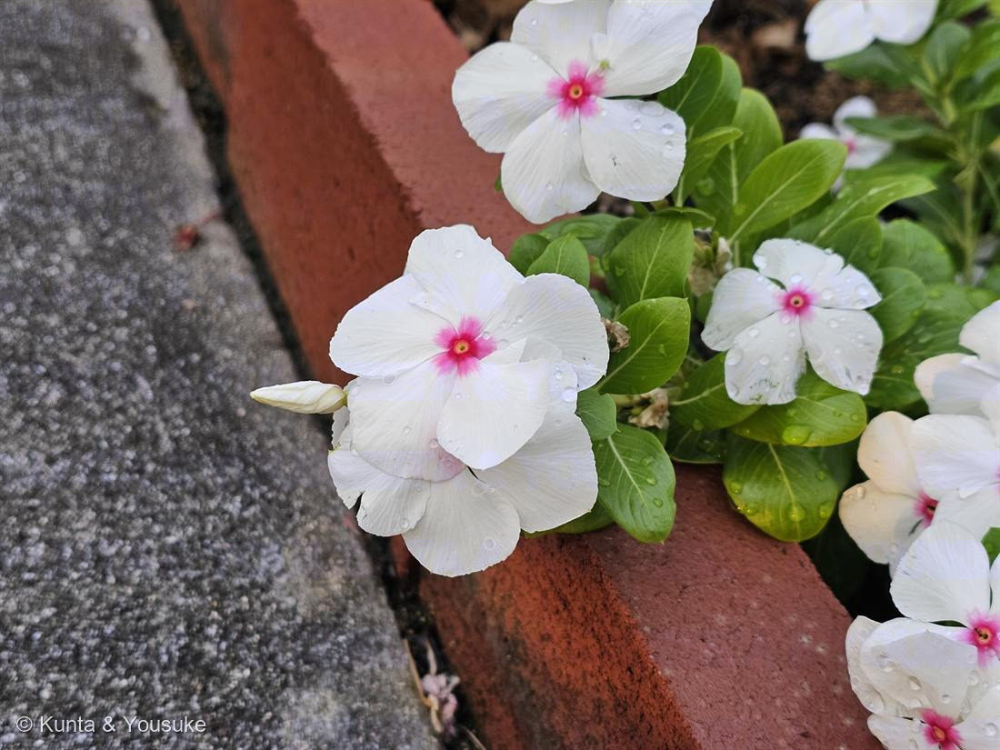
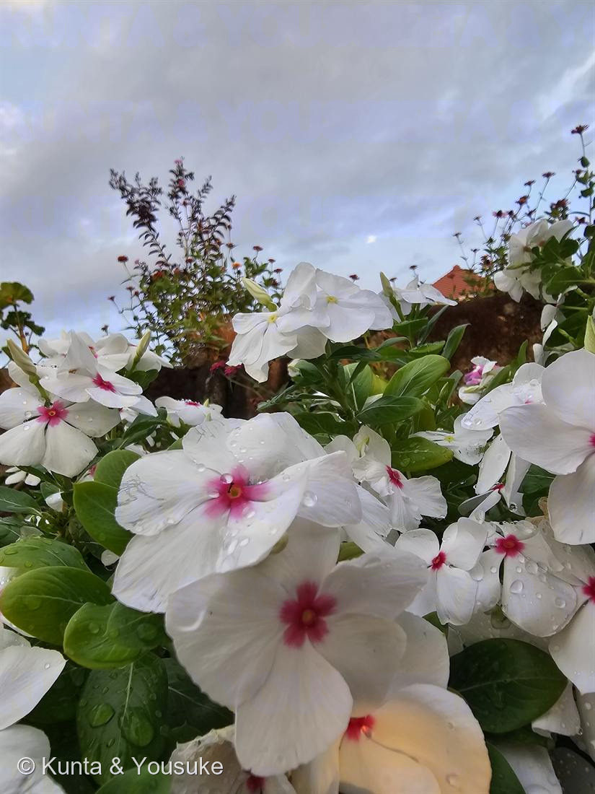

地図を読み込んでいるよ…
🔍 写真も地図も、押しているあいだ拡大して見られるよ（スマホは指を置いてすこし待ってね）。
🌍 の地図＝この子がもともと自生している場所を緑に。マダガスカル（世界の熱帯で栽培・帰化）。
⭐マダガスカルだけ。世界じゅうの花壇にいるのに、野生のふるさとはこの島ひとつ。抗がん剤（ビンクリスチン）は、この島の子から出てきた。
⚠ 地図は国（日本と中国だけ県・省）までしか塗れないから、ほんとうの分布より広く見えていることがあるよ。地図はだいたいの場所。正確なところは、上の文を見てね。
ニチニチソウ（日日草）
Catharanthus roseus (L.) G.Don
別名 · ニチニチカ ／ 旧属名 Vinca rosea ／ 原産マダガスカル
キョウチクトウ科 · Apocynaceae（ニチニチソウ属）── 045 ブルースター・051 ガガイモと同じ科
燻太さんの言葉「真ん中のピンクの星が特徴的で、毎日ぽんぽん咲いてるね」……その星は蜜への案内板。そしてこの花壇の花は、抗がん剤の原料。
名前のこと ── 「日日、次々に咲く」
- 和名日日草＝日々、次々に新しい花を咲かせるから。1つの花は数日でしぼむけれど、株はつぎつぎ開いて、初夏から晩秋までずっと咲く。→ 燻太さんの「毎日ぽんぽん咲いてる」は、そのまま名前の由来。
- Catharanthus＝「清らかな花」（katharos＋anthos）、roseus＝「バラ色の」。
- キョウチクトウ科は初めてではない＝045 ブルースター・051 ガガイモと同じ科（052〜056で「初めての科」が5つ続いたあとの“ただいま”）。⚠この科はみんな有毒（下）。
⭐ 燻太さんの「真ん中のピンクの星」＝蜜のありか
- 白い5枚の花びらの中心にある、あざやかなピンク〜赤の目（星）。花の中心からは細い筒（花筒）が下へのびていて、その奥に蜜がある。
- ⭐あの「星」は、ただの模様じゃなくて“蜜標（みつじるし）”＝「蜜はここ、まっすぐ下だよ」と、訪れた虫（おもにチョウ）に教える的（まと）。004 ランタナ・041 ニオイゼラニウムと同じ「蜜への案内板」（長い花筒＝チョウの長い口に合わせた形。044 ペンタスと同じ作戦）。→ 🦋「だれを呼ぶための花か」の小道へ。
- ⭐燻太さんが「特徴的」と気づいたその星こそ、花がお客さんに出しているサイン。よく見てるなあ。
⭐⭐⭐ この花は「抗がん剤」の原料 ── 花壇の花が、白血病の子を助ける
- ⭐⭐⭐ニチニチソウは、2つの大切な抗がん剤の“もとの植物”：
ビンクリスチン＝小児白血病・悪性リンパ腫などの治療に／ビンブラスチン＝ホジキンリンパ腫などに。（どちらもインドールアルカロイドの二量体。1958年・1961年に、この花から取り出された。） - ⭐効くしくみ＝細胞分裂に必要な骨組み「微小管（チューブリン）」にくっついて、分裂を途中で止める。さかんに分裂するがん細胞ほど、強く止められる。
- ⭐見つかったきっかけ＝もともと糖尿病の民間薬として調べていたら、「白血球を減らす作用」が見つかった。糖尿病薬にはならなかったけれど、その“分裂を止める力”が、白血病の治療薬になった。→ マダガスカル生まれの花壇の花が、世界じゅうの子どもの命を救っている。
- ⭐燻太さん（植物分子遺伝学者）へ：この薬ができるまでの体の中の道すじ（モノテルペン・インドールアルカロイド経路）は、植物がつくる薬の中でも一、二をあらそう複雑さで、近年ようやく全体が解かれ、酵母などで作らせる研究も進む。047 ダリア（イヌリン→腎臓の検査）・056 キカラスウリ（トリコサンチン）に続く「植物が人にわけてくれる薬」の、いちばん有名な一本。
⚠ きれいだけど、有毒
- ⭐キョウチクトウ科は、そろって有毒（045 ブルースター・051 ガガイモと同じ。切ると白い乳液）。ニチニチソウも全体にアルカロイドを含み、そのまま口にすると中毒。⚠「薬になる」からといって、生の花や葉を食べたり煎じたりは絶対にしない。薬は、精製して量をきびしく管理して、はじめて薬になる。
- ⚠おまけのキョウチクトウ（夾竹桃）は、この科の名の主で、街路樹や公園にある猛毒の木。美しい花のうしろに毒があるのが、この科の顔。